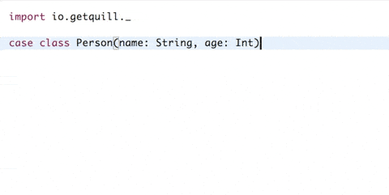

2014 - Live coding a CRUD database in Scala
- In-Memory Transactional CRUD Data Store
- Constraints
- Query Optimizer
Our data set
case class Person(id: Int, givenName: String, familyName: String)
extends Record
val dataStore = new InMemoryDataStore(Seq(
UniqueConstraint(classOf[Person].getName, "id")))
val numberWorkerBees = 2500000 // 2.5 Million
dataStore...createRecords(
(1 to numberWorkerBees)
.map(number => Person(number, s"Worker", "Bee"))
)
dataStore...createRecords(Seq(
Person(numberWorkerBees + 1000, "Abe", "Allen"),
Person(numberWorkerBees + 2000, "Betsy", "Baker")
))
Technique 1 - Scala Predicates
connection
.filter[Person](
_.familyName == "Allen")
)
>> 121 mSecs: Success(List(Abe Allen #2501000))
connection
.filter[Person](
_.id == 1
)
>> 121 mSecs: Success(List(Worker Bee #1))
Technique 2 - "Conditions" API
connection
.retrieveRecords[Person](
EqualsCondition("familyName", "Allen")
)
>> 815 mSecs: Success(List(Abe Allen #2501000))
connection
.retrieveRecords[Person](
EqualsCondition("id", 1)
)
>> 0 mSecs: Success(List(Worker Bee #1))
Summary
| Predicates | Conditions |
| Full Scan | ~125 | ~750 |
| Index | ~125 | ~0 |
* Times in milliseconds
* Green indicates type-safe
Sad Face
- Scala predicates are a "black box" at runtime
- The answer is there, but hidden
- Many ways to perform the analysis
AST
- Abstract Syntax Tree
- Scala compiler's intermediate structure
- Source -> AST -> Bytecode
Quill to the rescue

Technique 3 - Quill
ctx
.run(quote {
query[Person].filter(_.familyName == "Allen")
})
>> 706 mSecs: Success(List(Abe Allen #2501000))
ctx
.run(quote {
query[Person].filter(_.id == 1)
})
>> 1 mSecs: Success(List(Worker Bee #1))
Summary
| Predicates | Conditions | Quill |
| Full Scan | ~125 | ~750 | ~750 |
| Index | ~125 | ~0 | ~0 |
* Times in milliseconds
* Green indicates type-safe
A Closer Look
val dataStore = Data.sampleDataStore
val ctx = new DataStoreContext(dataStore, List(classOf[Person]))
import ctx._
val compiledQuery = quote { query[Person].filter(_.id == 1) }
val results: Seq[Person] = ctx.run(compiledQuery)
Idiom - The Compile Time Element
class ConditionIdiom extends Idiom {
override def translate(ast: Ast): (Ast, Statement) = {
val condition = ast match {
case BinaryOperation(
Property(_, attributeName),
EqualityOperator.`==`,
Constant(v)) =>
EqualsCondition(attributeName, v)
}
(ast, StringToken(toJson(condition)))
}
}
Context - The Runtime Element
class DataStoreContext(
dataStore: DataStore,
recordClasses: Traversable[Class[_ <: Record]])
extends Context[ConditionIdiom, Literal] with Encoders, with Decoders {
def executeQuery[T](queryJson: String,
prepare: PrepareRow => PrepareRow,
extractor: Record => T): List[T] = {
val query = toQuery(queryJson)
dataStore
.withConnection(
_.retrieveRecords(query.condition)
)(query.recordType)
}
}
Application of runtime values
def getPersonById(dataStore: DataStore, id: Int): Option[Person] = {
val ctx = new DataStoreContext(dataStore, List(classOf[Person]))
import ctx._
ctx
.run(quote { query[Person].filter(_.id == lift(id)) })
.headOption
}
Updated Idiom
class ConditionIdiom extends Idiom {
override def translate(ast: Ast): (Ast, Statement) = {
val (condition, lift) = ast match {
case BinaryOperation(
Property(_, attributeName),
EqualityOperator.`==`,
svl: ScalarValueLift) =>
(EqualsCondition(attributeName, "???"), svl)
}
(ast, Statement(List(StringToken(toJson(condition)),
ScalarLiftToken(lift)))
}
}
Updated Context
class DataStoreContext(
dataStore: DataStore,
recordClasses: Traversable[Class[_ <: Record]])
extends Context[ConditionIdiom, Literal] with Encoders, with Decoders {
def executeQuery[T](queryJson: String,
prepare: PrepareRow => PrepareRow,
extractor: Record => T): List[T] = {
val query = toQuery(queryJson)
dataStore
.withConnection(
_.retrieveRecords(prepare(query.condition))
)(query.recordType)
}
}
Runtime Value Encoder
case class DataStoreEncoder[T]() extends BaseEncoder[T] {
override def apply(index: Int, value: T, condition: Condition): Condition = {
condition match {
case EqualsCondition(fieldName, placeholder) if placeholder == "???" =>
// Replace lift placeholder
EqualsCondition(fieldName, value)
case _ =>
// Return unmodified
condition
}
}
}
Json Query Format
{
"typeName":"Person",
"condition":{
"type":"eq",
"fieldName":"id",
"value":"!!0"
},
"liftings":[
"!!0"
]
}
SELECT * FROM person WHERE id=?
Unimplemented Quill Features
- Probing
- Result transformation
- Naming algorithms
Comparison with Slick
- Compile time vs. runtime query generation
- Pro: No need for quill-specific classes/structures
- Pro: Uses standard scala operators like ==
- Con: No schema creation ability
- Con: Not as many supported use cases
Where/how to use quill
- Replace non-type safe query construction
- Leverage "probe" to syntax/type check queries
- Reduce code size vs. Slick for certain use cases
- Apply this concept in other areas
Gotchas
- Undetected code dependencies
- Debugging macros
- High knowledge barrier